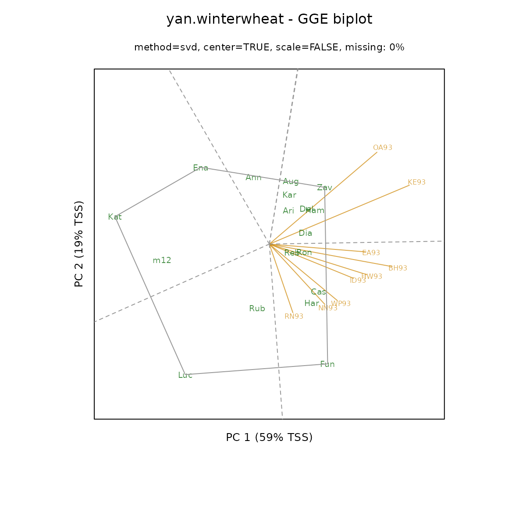
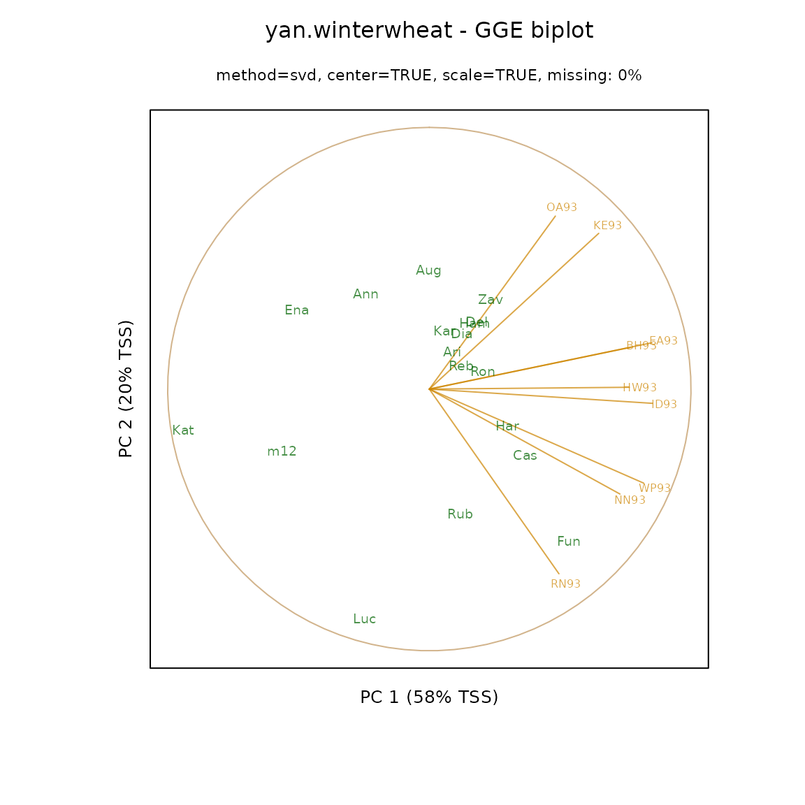
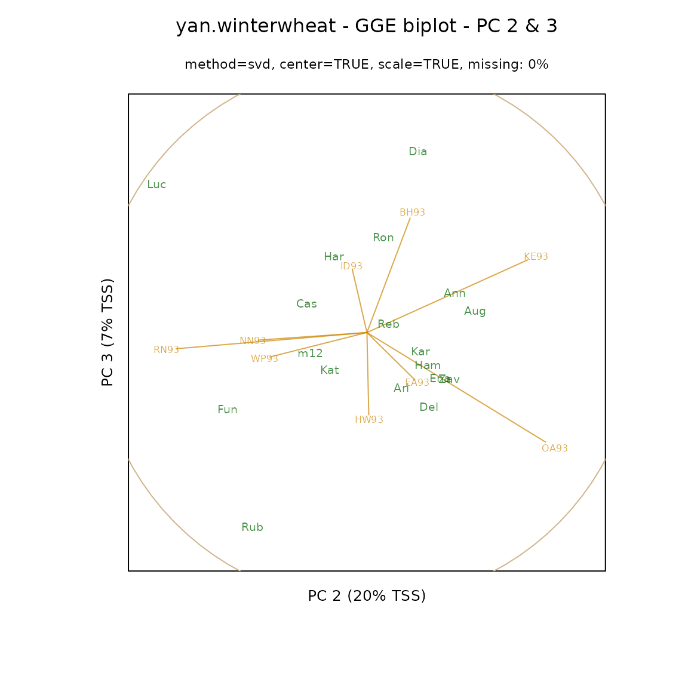
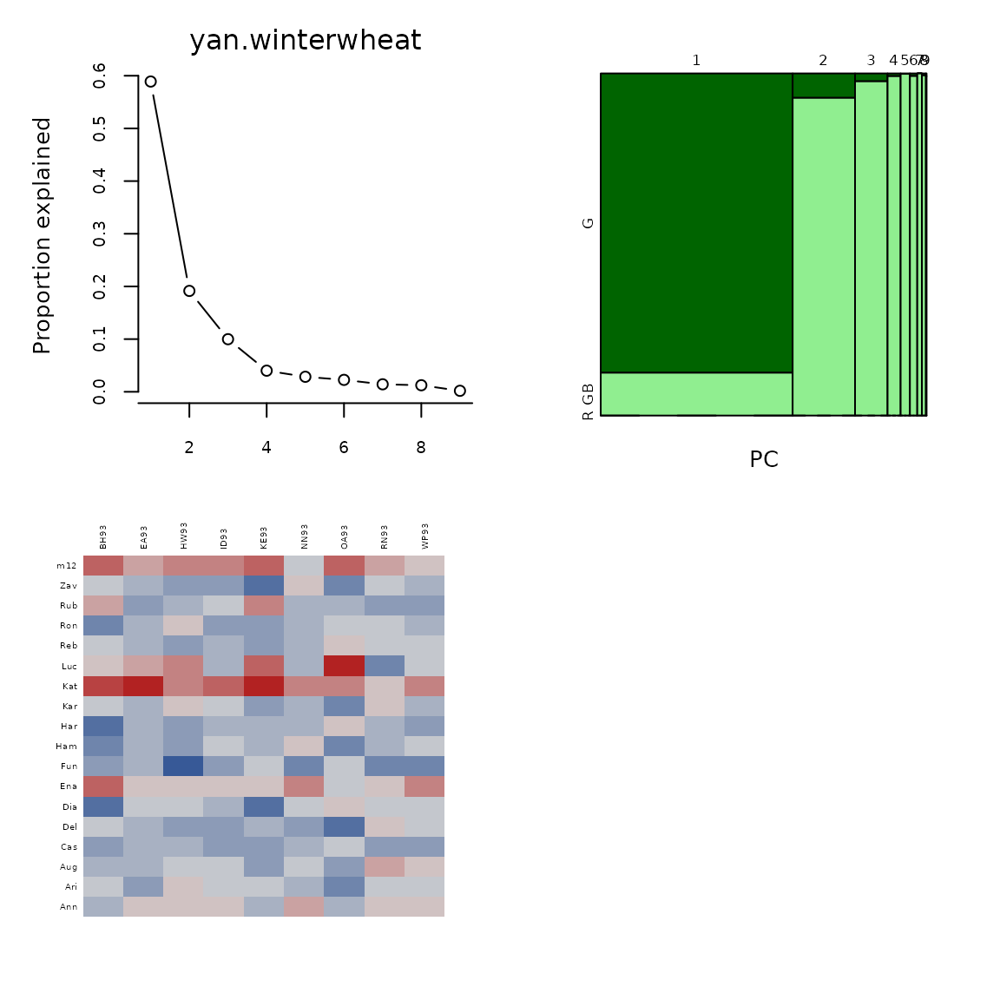
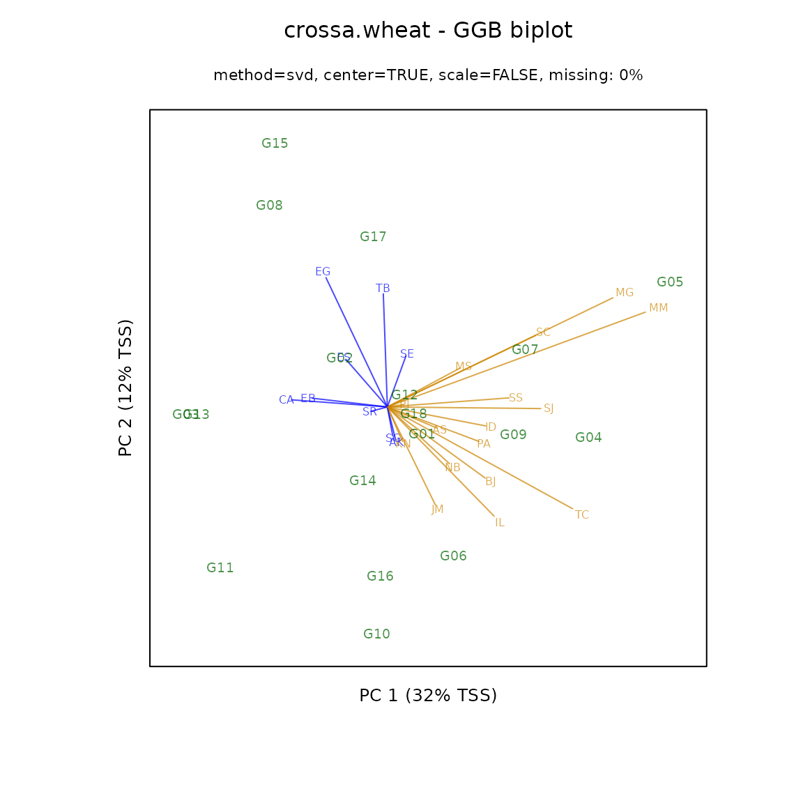

Genotype plus Genotype-By-Block-of-Environments Biplots
Kevin Wright
2024-10-28
Source:vignettes/gge_examples.Rmd
gge_examples.RmdR setup
library("knitr")
knitr::opts_chunk$set(fig.align="center", fig.width=6, fig.height=6)
options(width=90)An example of a GGE (genotype plus genotype-by-environment) biplot
similar to figure 12 of Yan and Tinker
(2006). The flip argument can be used to flip the x
and y axes so that biplots are oriented as desired. Because the SVD
factorization is not unique,
library(agridat)
data(yan.winterwheat)
dat1 <- yan.winterwheat
library(gge)
m1 <- gge(dat1, yield~gen*env, scale=FALSE)
biplot(m1, main="yan.winterwheat - GGE biplot",
flip=c(1,0), origin=0, hull=TRUE)
Many people prefer to use ‘standardized’ biplots, in which the data for each environment has been centered and scaled. For standardized biplots, a unit circle is drawn. Environment vectors that reach out to the unit circle are perfectly represented in the two dimensional plane.
m2 <- gge(dat1, yield~gen*env, scale=TRUE)
biplot(m2, main="yan.winterwheat - GGE biplot",
flip=c(1,1), origin=0)
As seen above, the environment vectors are fairly long, so that relative performance of genotypes in environments can be assessed with reasonable accuracy. In contrast, a biplot based on principal components 2 and 3 has shorter vectors which should not be interpreted.

Laffont, Hanafi, and Wright (2007) showed how to partition the sums-of-squares simultaneously along the principal component axes and along ‘G’ and ‘GxE’ axes.
plot(m1, main="yan.winterwheat")
The mosaic plot above shows that the first principal component axis is capturing almost all of the variation between genotypes, so that a projection of the genotype markers onto the first principal component axis is a good overall representation of the rankings of the genotypes.
Laffont, Wright, and Hanafi (2013) presented GGB (genotype plus genotype-by-block of environments) biplots, which are useful to enhance the view of mega-environments consisting of multiple locations.
library(agridat)
data(crossa.wheat)
dat2 <- crossa.wheat
# Define mega-environment groups of locations
dat2$eg <- ifelse(is.element(dat2$loc,
c("KN","NB","PA","BJ","IL","TC",
"JM","PI","AS","ID","SC","SS",
"SJ","MS","MG","MM")), "Grp1", "Grp2")
library(gge)
# Specify env.group as column in data frame
m3 <- gge(dat2, yield~gen*loc, env.group=eg, scale=FALSE)
biplot(m3, main="crossa.wheat - GGB biplot")
How to modify the “focus” of a biplot
Let X be a genotype-by-environment matrix.
Let the Singular Value Decomposition be X = USV'.
Let the NIPALS decomposition be X = TLP'. DANGER, some
algorithms do not factor L out of T.
library(agridat)
library(reshape2)
library(nipals)
dat3 <- agridat::yan.winterwheat
dat3 <- acast(dat3, gen~env, value.var="yield")
dat3 <- scale(dat3, center=TRUE, scale=FALSE)
Xsvd <- svd(dat3)
Xnip <- nipals(dat3, center=FALSE, scale=FALSE)
U <- Xsvd$u
S <- diag(Xsvd$d)
V <- Xsvd$v
T <- Xnip$scores
Lam <- diag(Xnip$eig)
P <- Xnip$loadingsBiplots with genotype focus
To obtain a genotype-focused biplot the eigenvalues are
associated with U.
The genotype coordinates are can be obtained from the SVD using the
first two columns of U*S or equivalently from NIPALS
T*Lam.
The environment coordinates are the first two columns of
V (from the SVD) or P (from NIPALS).
V[ , 1:2]
P[ , 1:2]Biplot with environment focus
To obtain an environment-focused biplot the eigenvalues are
associated with V.
The genotype coordinates are the first two columns of U
(from SVD) or T (from NIPALS).
U[ , 1:2]
T[ , 1:2]The environment coordinates are S*V (from SVD) or
Lam*P (from NIPALS).
Comments on biplots
Note that GGE biplots are environment-focused. In particular, this provides the interpretation that the correlation of genotype performance in two environments is approximated by the cosine of the angle between the vectors for those two environments.
The SVD and NIPALS methods provide the same principal components for
complete-data, except that a principal component from SVD and the
corresponding principal component from NIPALS might point in opposite
directions (differ by a factor of -1 as in some of the
examples above. The corresponding biplots would therefore be
mirror-reversed along that component. For biplots from SVD and NIPALS
that are visually consistent, each principal component can be directed
to point in a direction that is positively correlated with the overall
genotype means. In other words, if the correlation of the genotype means
and the ordinate of the genotypes along the principal component is
negative, the principal component is multiplied by -1.
As with all biplots, the environment vectors can be arbitrarily scaled so that the genotypes and environments uses a similar amount of area on the plot. The algorithm that physically centers the biplot and scales it on the page is not perfect and has opportunities for improvement.